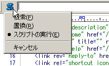

萌ディタの画面上にある１行入力ダイアログの使い方の解説
基本、呼び出し方
通常は検索Ctrl+F や置換Ctrl+Hを行う画面上の入力画面の、もう一つの機能
呼び出し方は入力バッファの前にあるアイコンをクリックすると出てきます
ショートカットではCtrl+Eです。
しかしまぁ、これが呼び出せたからと言ってなかなか使い方を見るのが難しいのがこの機能。今回はデフォルトで付いている機能をちょっと紹介してみようと思います
式の実行
ぶっちゃけ本サイトの方でぜんぜん解説加えていないのがそもそもの問題の発端なんですが、機能自体はstd.javascript.txtを読んでみれば以外に簡単に見つかりました
該当部分のコードは最後に挟んでおきますので、それを読んでおいて下さい
萌ディタが標準で積んでいる書式は次の４通り
最初の書式は非プログラマ向けの機能ですが、その他の３書式は、おおよそJavaScriptが打てる人向けの機能です
- 書式１:文字列の複数回挿入
-
数字(10進数) '(挿入したい文字列)と言う書式で指定した回数だけ文字列をバッファに送ります。具体的には
40 '=とやると。「=」がバッファに40回送られて
========================================
と表示されます
- 書式２:JavaScript関数の呼び出し
-
萌ディタが使える関数を呼び出せます
App.Buffer.Save('') //保存する - 書式３:JavaScriptコードの実行
-
バッファの最初に「?」を入れておく事で実行できます
? JavaScriptコード例えば
? 99*99と入れれば、実行結果である「9801」がキャレットのある位置に入力されます
今回は数式を入れましたが
? "abcabc".replace( /b/, "$1".toUpperCase() ) // 小文字のbをすべて大文字に変換で「
aBcaBc」と表示したり等、JavaScriptのコードなら何でも実行可能です個人的感想としては、バグが入るかも知れないコードを、その場で書いていられないよねってカンジしないこともありませんけど…（マテ
- 書式４:JavaScriptコードの複数回実行
-
数字(10進数) JavaScriptコード上の書式で、複数回のJavaScriptのコードを実行します
基本的には、書式１と書式３の融合型ですね
機能の追加
とまぁ、標準でついている機能をちょっと説明させていただきましたが、実際の所作者のほうで意図しているのは
「こっちでつけているのは参考程度の機能なので、ユーザーさんで好きな機能を追加してね」
という事だと思うのです。
以前スレの方で拾ったのが次の拡張です
- evalrun
-
１行ダイアログで色々出来るようになる拡張です。無駄に完成度高い
後は自分なりに拡張して楽しんでみてください
コードの掲載
最後、1行入力ダイアログは、その入力が確定した瞬間にonEvaluate関数が実行されます(本家のイベントリファレンス参照のこと)。
と言うことはstd.javascript.txtの該当部分のコードに機能が載せられているわけですから、そこから読んでしまえば基本的には機能の推測が出来るわけです
一応、ブチ抜いたモノをココに載せておきます。以降バージョンアップのときにオリジナルの方が書き換えられていても恨まないで下さい
f.onEvaluate= function (arg, classname, methodname) {
//ウィンドウの １ 行バッファにスクリプトが入力されたときに呼ばれる
var match_array;
var eval_func;
// \2 を文字列とみなして、\1 回 Send() する
// ex) "80 '-" -> 80 個の '-' を Send()
match_array= arg.match(/^ *([0-9]+) +['"]/);
if (match_array) {
var original= eval('\'' + arg.substring(match_array.lastIndex).replace(/\'/g, '\\\'') + '\'');
if (original = '') {
var result= original;
var whole_length= original.length * parseInt(match_array[1]);
while (result.length * 2 <= whole_length) result = result;
while (result.length < whole_length) result = original;
App.Caret.Send(result);
}
return;
}
// \2 を関数本体とみなして、\1 回評価する
// ex) "10 App.Caret.MoveNext(1)" -> キャレットを 10 行下へ移動
match_array= arg.match(/^ *([0-9]+) +/);
if (match_array) {
eval_func= new Function(arg.substring(match_array.lastIndex));
for (var j= 0; j < parseInt(match_array[1]); j++)
eval_func();
return;
}
// \2 を関数内の式とみなして評価し、結果を Send() する
// ex) "? 99*99" -> 99*99 の結果である 9801 を Send()
match_array= arg.match(/^ *\? */);
if (match_array) {
eval_func= new Function('return ' + arg.substring(match_array.lastIndex) + ';');
App.Caret.Send(eval_func().toString() + '\n');
return;
}
// arg 全体を関数本体とみなして評価する
// ex) "App.Buffer.Save('')" -> 保存する
eval_func= new Function(arg);
eval_func();
};